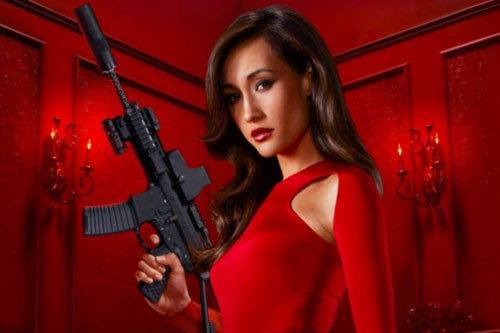
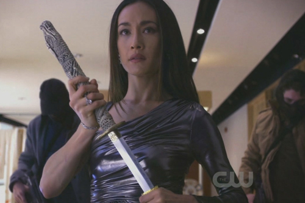

Nikita
This was produced by American TV series.
There was a division which belonged to the government for killing political foes.
However division was a fictional department,not known by the world.
All the spies came from prison or had a complex background.
When they entired,division would fake their death certificate.
That's why people didn't knew them.
However,the heroine,Nikita,she rebel,fled and tried to defeat them.
After she went out there,she began destroying any of their horrible plan.
She also found a team.
She wanted to help more human!
喜歡的理由
在這部電視劇中,看到女主角用她的智慧和武力打敗敵人,令人崇拜!
那強而有力的拳擊絲毫不輸男生,細膩的心思更能讓她觀察到敵人的弱點。
總共有四季的內容,精彩又刺激的情節讓我忍不住一看再看,即使這部電視劇年代稍微久遠我仍然很喜歡。

